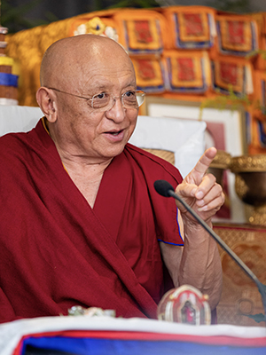
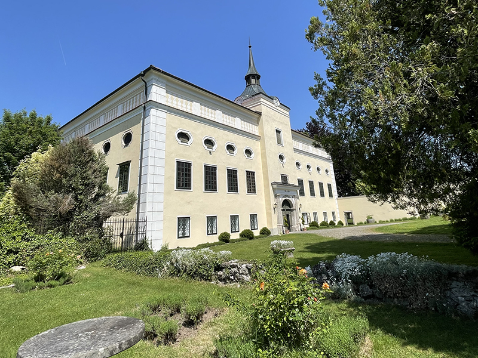
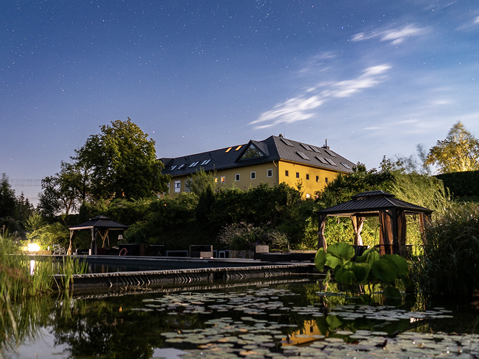
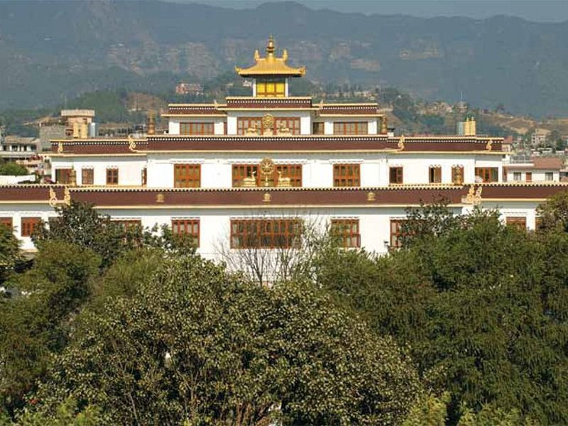

The University
Compassion guided by the wisdom of interdependence
Built on the conviction that flourishing emerges when who you are and what you do are integrated in a coherent vision of wise and compassionate action.

The vision
As knowledge becomes instant and abundant, the value of an education can no longer rest on acquiring knowledge alone. What matters are the timeless virtues that constitute not just intelligence, but wisdom: the discernment to know what is worth doing, the presence to hold complexity, and the capacity to act with care. Kremsegg University is designed to cultivate these qualities through lifelong education.
Our approach to education is rooted in the insight that all things exist in a web of interdependence. This is not a sectarian claim. It is a description of how reality works, reached independently by centuries of contemplative inquiry and by the modern sciences of ecology, complex systems and consciousness. When that recognition moves from understanding into lived experience, it changes how a person acts, decides and relates to the people and systems around them. With wise and compassionate leadership, a vision of global prosperity can become more than a dream — it can be a reality.

Under the guidance of Chökyi Nyima Rinpoche
Rinpoche serves as the university’s Spiritual Guide. His life has been devoted to making contemplative wisdom available to the modern world, with rigor and without dilution. In 1997 he founded Rangjung Yeshe Institute in Kathmandu, which joined traditional study with modern scholarship and, with Kathmandu University, became an accredited degree-granting center. For a focus on contemplative practice and traditional learning, he also founded “Gomde” (or “Meditation Community”) centers across Europe, the Americas and Asia, including Gomde in Austria, where this project began.
“In its most basic sense, the word ‘dharma’ points to the timeless wisdom that the diverse contemplative traditions of the world have cultivated for centuries. To help others to study the dharma and become kinder and wiser human beings is the most sustainable help we can give to them, to ourselves and to the planet.”
How we teach
Kremsegg follows the scholar-practitioner model: faculty and students do not only study contemplative traditions but also engage with them through lived practice. In ways that resonate deeply with contemporary theories of education, every course moves through the three stages of classical Buddhist education:
Study
Rigorous learning in seminars, lectures, and fieldwork.
Reflection
Testing what is learned through debate, inquiry, and problem-solving.
Practice
Daily contemplative training, so that insight becomes a stable capacity rather than an idea.
In the spirit of the ancient monastic university of Nalanda, where Buddhist philosophy was studied alongside other traditions, students engage the world’s wisdom traditions and the sciences as partners in one inquiry.
Programs in development
Kremsegg University is developing its first degree programs around a shared educational vision: rigorous academic study brought into conversation with contemplative practice to address the major questions facing individuals, organizations, and societies today.
With a curriculum that emphasizes engagement with the world, our graduates will be empowered to face the challenges of the future through training in fields such as organizational leadership and change management, contemplative science, human flourishing, and complex systems theory.
The detailed structure of the degree programs is now being developed by the university’s academic team, under the leadership of Founding Rector Professor John Dunne and in consultation with international scholars and Austrian accreditation experts.
Alongside its degree programs, Kremsegg will offer executive education, summer intensives, and other residential and hybrid programs, making the university’s distinctive approach available to learners at all stages of life.
Formats will include residential study at Kremsegg as well as hybrid and online learning.
Where you will learn

Schloss Kremsegg, Kremsmünster. The main seat: a Baroque castle set in parkland, easily accessible from Vienna.

Gomde, Upper Austria. The contemplative heart, thirty minutes away, a retreat center where the vision for this project first arose.

Rangjung Yeshe Institute, Kathmandu. Three decades of Buddhist studies and Himalayan languages at a high academic level.